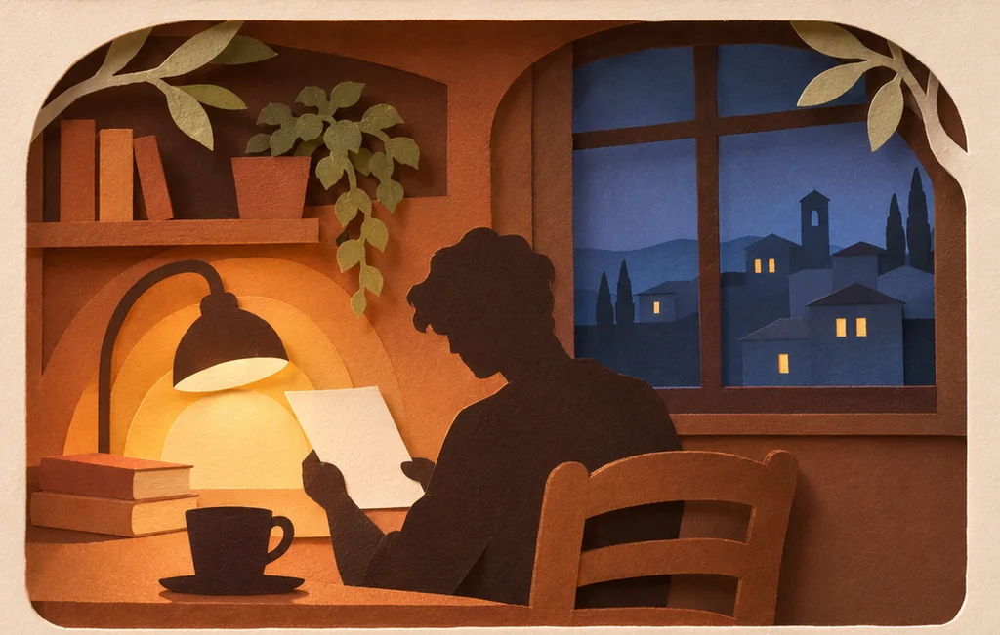
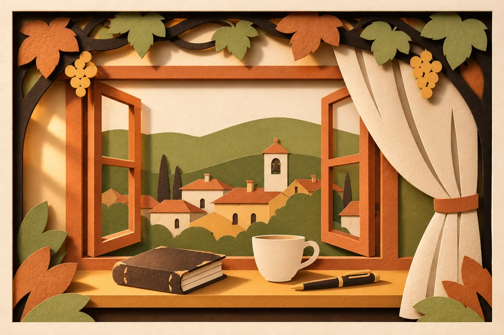

Le Manuel d’Épictète est court, mais il ne se lit pas comme un livre que l’on referme après en avoir retenu quelques idées. Il ressemble davantage à une série de rappels destinés à interrompre nos réflexes : se plaindre, accuser, vouloir contrôler l’incontrôlable, confondre un événement avec le jugement que l’on porte sur lui.
Épictète n’a pas écrit lui-même le texte que nous appelons aujourd’hui le Manuel. Son élève Arrien a mis par écrit une partie de ses enseignements, probablement à partir de cours et de notes. Cette origine explique le ton direct de l’ouvrage : il ne cherche pas à construire un système, mais à rendre une pensée utilisable.
Le mot grec encheiridion, souvent traduit par « Manuel », peut aussi évoquer ce que l’on garde sous la main. Le livre est donc un outil de poche pour les moments où la théorie ne suffit plus. Son sujet n’est pas la perfection du sage, mais le prochain jugement que tu vas former et le prochain geste que tu peux choisir.
Épictète Manuel : commencer par distinguer ce qui dépend de toi
Le premier chapitre donne la clé de tout le reste. Certaines choses dépendent de nous, d’autres n’en dépendent pas. Nos jugements, nos choix, nos refus et notre manière de répondre appartiennent à la première catégorie. Le corps, la réputation, les possessions, la carrière et les décisions des autres appartiennent à la seconde, au moins en grande partie.
« Des choses les unes dépendent de nous, les autres ne dépendent pas de nous. »
Épictète, Manuel, chapitre 1 (traduction de Charles Thurot)
Cette distinction ne signifie pas que tu dois devenir indifférent. Elle t’invite à dépenser ton énergie au bon endroit. Tu peux préparer un entretien, parler avec sincérité et travailler sérieusement. Tu ne peux pas forcer un recruteur à t’apprécier, ni garantir le résultat d’une décision. La liberté commence quand tu sépares ton engagement du résultat qui lui échappe.
Ne pas confondre l’événement et ton jugement
Une même situation peut produire des réactions très différentes. Un message sans réponse devient une offense pour l’un, un simple contretemps pour l’autre. Une erreur professionnelle devient la preuve d’une incapacité définitive pour quelqu’un, un signal à examiner pour quelqu’un d’autre.
Épictète ne nie pas le fait initial. Le message n’est pas arrivé, l’erreur a bien eu lieu, la maladie ou la rupture peuvent réellement faire souffrir. Ce qu’il examine, c’est la seconde couche : l’histoire que tu ajoutes à l’événement, puis la conclusion que tu tires sur toi-même, les autres ou l’avenir. Cette attention rejoint la réflexion sur les émotions, qui montre pourquoi une réaction mérite parfois d’être examinée avant d’être suivie.
Cette discipline demande de ralentir. Avant de dire « cette situation est insupportable », tu peux demander : qu’est-ce qui s’est effectivement passé ? Qu’est-ce que j’en déduis ? Quelle part de ma réaction vient d’un fait, et quelle part vient d’une interprétation ? Ce détour ne supprime pas l’émotion, mais il évite qu’elle conduise seule.
Vouloir les choses telles qu’elles arrivent
Le stoïcisme d’Épictète ne consiste pas seulement à accepter les événements après coup. Il propose de transformer notre manière de vouloir. Nous souffrons souvent parce que nous exigeons que le réel corresponde à un scénario précis : que les autres soient justes, que nos efforts soient récompensés, que notre corps reste en bonne santé, que nos projets suivent leur calendrier.
Lorsque le scénario se brise, nous ajoutons une seconde souffrance à la difficulté première. Nous ne rencontrons plus seulement un obstacle, nous protestons contre le fait qu’il existe. Épictète invite alors à vouloir que les choses arrivent comme elles arrivent, non par goût de la passivité, mais pour retrouver une action possible à l’intérieur de la situation.
Cela ne veut pas dire approuver une injustice ou renoncer à agir. Si une décision est mauvaise, tu peux la contester. Si une relation te blesse, tu peux poser une limite. Mais tu ne gagnes rien à exiger mentalement que le passé n’ait pas eu lieu. Accepter le fait est le point de départ de la réponse, pas sa fin. Cette idée prolonge la question de la liberté : que peux-tu encore choisir quand les circonstances ont déjà réduit tes options ?

La philosophie comme entraînement quotidien
Le Manuel ne demande pas d’admirer Épictète. Il demande de s’exercer. Une idée n’a de valeur que si elle modifie une réaction concrète : attendre avant de répondre à un message agressif, reconnaître une erreur sans se condamner, préparer un projet sans confondre préparation et garantie de réussite.
Tu peux commencer par une question simple le matin : qu’est-ce qui risque aujourd’hui de m’échapper ? La réponse peut concerner la circulation, l’humeur d’un collègue, un résultat médical ou la décision d’une personne aimée. Puis demande-toi quelle attitude reste néanmoins à ta portée. Cette préparation ne prédit pas la journée, elle t’empêche de découvrir trop tard que tu avais abandonné ton calme au premier imprévu. Elle rejoint aussi la discipline de la responsabilité, qui consiste à répondre de ses actes sans prétendre maîtriser tout ce qui les entoure.
Le soir, le même exercice devient un examen sans tribunal. Où ai-je confondu influence et contrôle ? Où ai-je laissé le regard d’autrui décider de ma valeur ? Où ai-je agi selon mes principes, même imparfaitement ? La philosophie devient alors une pratique de correction, pas une nouvelle raison de se juger.

Ce que le Manuel ne dit pas
On caricature parfois Épictète en sage qui demanderait de tout supporter en silence. Ce n’est pas la conséquence nécessaire de sa pensée. Distinguer ce qui dépend de toi ne revient pas à laisser les autres agir sans limite. Tu peux choisir de partir, de protester, de demander de l’aide ou de changer de travail. Ces décisions sont précisément des actes qui relèvent de ta capacité de jugement.
Le stoïcisme ne promet pas non plus une vie sans tristesse, sans peur ni colère. Il cherche plutôt à éviter que ces émotions deviennent des ordres. La peur peut signaler un danger, la colère une blessure ou une injustice. Aucune ne doit pourtant décider seule de ce que tu vas faire.
Cette nuance rend le Manuel plus exigeant qu’un simple discours de résignation. Il ne te demande pas de trouver une excuse à tout. Il te demande de rester responsable de ta réponse, même lorsque tu ne choisis pas la situation de départ.
Lire Épictète aujourd’hui
Le Manuel est utile dans les périodes où tu cherches une prise immédiate : changement professionnel, conflit, attente, échec ou incertitude. Il ne remplace ni une décision concrète ni un soutien extérieur. Il fournit une méthode pour ne pas ajouter de confusion à ce qui est déjà difficile.
Tu peux le lire lentement, un chapitre à la fois, en choisissant une phrase à tester dans la journée. La question décisive n’est pas « suis-je devenu stoïcien ? », mais « quel jugement puis-je rendre plus juste maintenant ? ». Pour Épictète, la liberté n’est pas l’obtention de tout ce que tu veux. C’est la capacité de ne pas remettre ton esprit entre les mains de ce qui ne dépend pas de toi.

En bref
📌 Le Manuel d’Épictète commence par une distinction essentielle. Ce qui dépend de toi concerne tes jugements et tes choix, pas les résultats ni les décisions des autres.
📌 Un événement n’est pas encore un jugement. En séparant le fait de l’histoire que tu lui ajoutes, tu récupères une marge de liberté.
📌 Le stoïcisme est un entraînement, pas une résignation. Il t’aide à agir avec justesse dans une situation que tu ne contrôles pas entièrement.